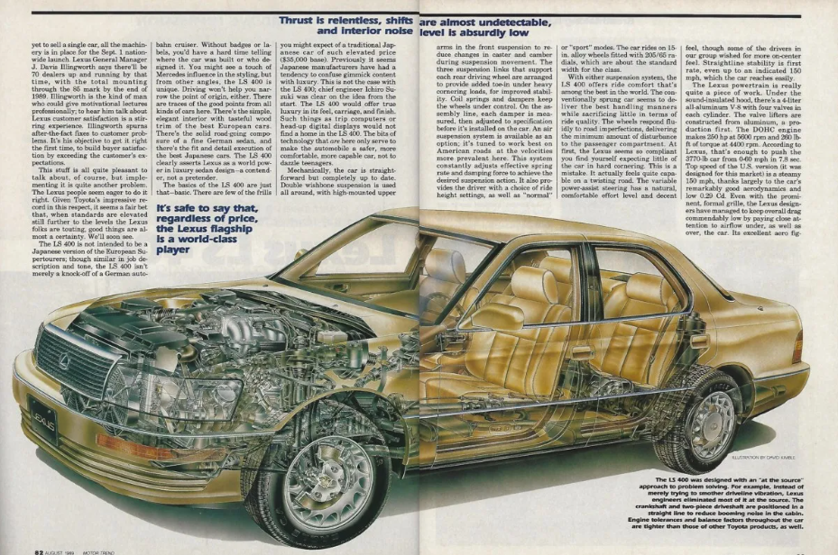

A comprehensive analysis of three luxury competitors
The Lexus LS400: Very first lexus.
Japanese vehicles were thriving in the US since their well-built economy cars had taken over the market during the oil crisis.
The Japanese market share had climbed from 11% in 1969 to 28% in 1980, this was a huge jump that needed to be controlled. A restriction
was placed in 1981 to limit the import of Japanese cars into the U.S. to just 1.68 million cars per year. So the Japanese had to find a
way to keep making money with this restriction in place. This led to the formation of Luxury divisions of established manufacturers to sell
Luxury cars at a higher price.
In 1983, Ichiro Suzuki led "Project F1" and was tasked to build the best car in the world. It was a huge undertaken that took five years of
research and development. Finally, in 1989, Project F1 was unveiled as the new Lexus LS400 which was the very first Lexus model ever made.
The LS was a success and catapulted Lexus up the Luxury ladder well above its Japanese counterparts and put them on par with international competitors,
particularly those from Europe.
Ichiro Suzuki. The man behind the Lexus LS400
A small team was sent to reside in Orange County, California for a month to study the habits of the rich who would be the potential buyers of their
new luxury car. The study was to determine what they liked and wanted in their luxury vehicles and which brands were their to go-to choice. In the
end, the LS had its sights set on established German brands like Mercedes and BMW. This would seem impossible for a new company but there was solid
backing from the parent company Toyota. There was no budget or time constraints so the team had everything they needed to come up with and eventually
build the best luxury car in the world.
Engineered To The Highest Standard

60 designers, 1,400 engineers split among 24 teams, 2,300 technicians, and over 200 support workers took part during the development of the new LS.
This was to ensure that every aspect of this car was built to the highest standard no matter how much it cost and how many revisions were needed.
The first design sketches were shown in 1985 with a low-slung sports car look but the LS was meant to be a stately-looking luxury car. It was later
changed to a traditional three-box design which was befitting for a car of its stature. It also went through extensive wind tunnel testing resulting
in a low drag coefficient of 0.29 which was among the lowest of any car at the time. This was also necessary to help maintain good fuel economy.
Inside the flagship sedan, the engineers worked just as hard to make it one of the best living spaces in the world. Over 24 types of woods and various
leather materials were tested for over two years before finally arriving with a combination they were satisfied with. The California walnut wood and
leather were going to be the touchpoints on the vehicles they had to look good and feel good as well. It was also packed with some of the latest luxury
features of the time to make the operations as smooth as possible.
The LS also features 300 extra innovations for smooth operation and improved silence in the cabin. An optional passive air suspension system was also
developed the make the ride even smoother. All these resulted in a very quiet cabin of 58 decibels at 60 MPH which was quieter than its equivalent rivals
from Mercedes and BMW. All at a cost of just $35,000 when it was launched in 1989. This undercut the competition by a huge margin as the equivalent BMW and
Mercedes cost around $60,000 and $70,000 respectively.
Lexus had spent over a billion dollars in the development of the LS with approximately 450 prototypes built which resulted in such a phenomenal vehicle.
In its first year, it sold over 40,000 units but not without issues as 8,000 vehicles were recalled for defective wiring and overheated brake lights which
were all remedied in 20 days. The Lexus team had planned for any unforeseen occurrences and were swift to act as this was crucial to the success of the LS.
This earned Lexus a great reputation among its new customers and further aided in massive sales.
Competitors bought the LS And tore it down to find out why it was so good and marveled at how Lexus could build such a high-quality vehicle at such a low price.
BMW even accused Lexus of selling the LS below the cost value to put them out of business. By 1990, sales of the LS in the US had surpassed that of Mercedes and
BMW which were the key competitors. The LS had succeeded in its mission and was the luxury car everyone wanted.
Mercedes Launched the W140 S-class in 1991 which is considered one of the greatest Mercedes models of all time. But the budget was vastly exceeded on that car as
it was delayed and many revisions were made to best the Lexus LS. Chief engineer, Wolfgang Peter lost his job for this decision which later resulted in a much more
expensive vehicle than its predecessor and way more expensive than the LS with a base price of $72,000 for entry-level cars. But Lexus would not rest as they made
a refresh to the LS In 1992 with over 50 new revisions based on customer feedback.
A silky smooth V-8 engine
With its $1 billion development cost, Lexus made sure the LS shared no parts with any existing model and that included the engine. A flagship vehicle needed
a befitting engine and most cars in its class made use of a V-8 engine for smooth power delivery. About $400 million was spent on the development of the new
engine with 900 prototypes made. The final engine was the 4.0-liter 1UZ-FE naturally aspirated V-8 engine.
Engine
1UZ-FE, Naturally Aspirated V8
Displacement
4.0 Litres
Power
250 Horsepower
Torque
260 pound-feet
Transmission
Four-speed Automatic
Drivetrain
Rear-wheel Drive
0-100
8 Seconds
Extensive testing was done on this engine in combination with all of its moving parts, suspension, and various mechanical components. Over 1.7 million miles
of testing was done on international soil in Europe, Australia, and the US in various weather conditions. This was to ensure the powertrain components
worked in all conditions and in harmony to deliver power as smoothly as possible. To show off the smoothness of this engine, Lexus famously made a commercial
stacking glasses of wine on the hood while the car was revving and they didn't topple over.
But this smoothness does not mean the LS400 was slow as it could hit 60 MPH in 8 seconds with a top speed of 155 MPH. It made use of a four-speed automatic
which sent all that power to the rear wheels. The engine and powertrain were geared towards smooth power delivery which in turn led to a quiet and relaxed
feeling inside the cabin. It was also a very reliable engine as it made the 2007 consumer reports list of cars that regularly exceeded 200,000 miles with proper
maintenance. There's even the now infamous million-mile Lexus which is an LS400 that has driven over a million miles.